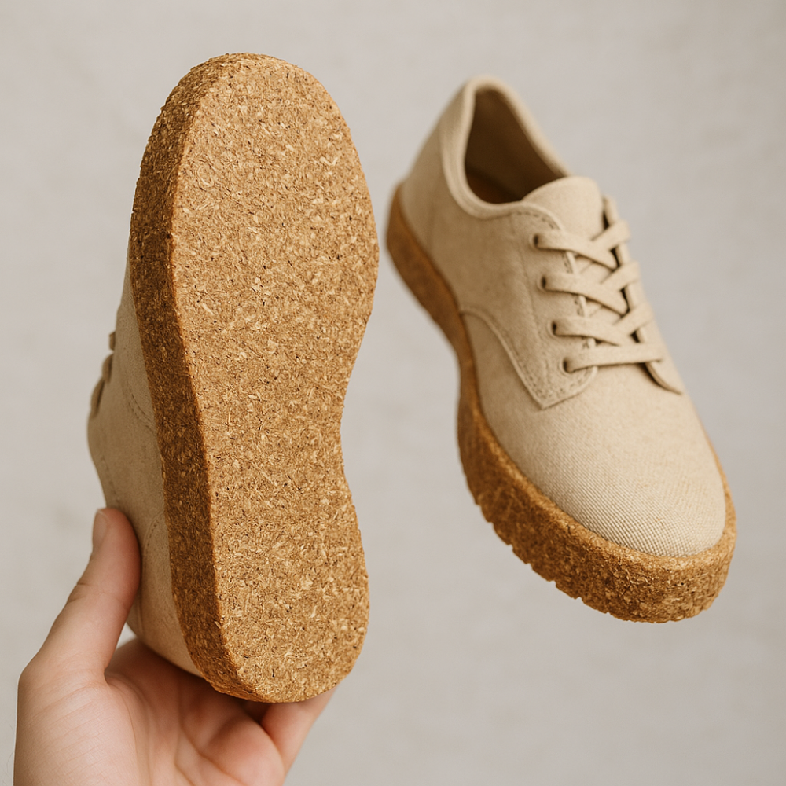

ECO SHOE-DUST REVITALIZES MARIKINA'S FOOTWEAR HERITAGE.
We create revolutionary shoe soles and insoles from upcycled sawdust, aiming to reinvent Marikina's storied shoemaking industry while healing our planet.
WHY CHOOSE ECO SHOE-DUST?
ENHANCED COMFORT & HYGIENE
Eco Shoe-Dust provides bacteria, natural antifungal, and antimicrobial protection, odor control, and offer antibacterial protection.
SAWDUST INNOVATION FOR SUPERIOR SOLES
Transform upcycled sawdust into lightweight, durable, and shock-absorbent footwear foundations.
REVITALIZING LOCAL CRAFTSMANSHIP
Every pair supports Marikina's storied heritage, empowering local artisans to preserve trade heritage and stimulate economic activity.
OUR JOURNEY: FROM SAWDUST TO SUSTAINABLE SOLES AND SOCIAL IMPACT
Eco Shoe-Dust transforms discarded sawdust into high-performance footwear components, empowers local craftsmen, revitalize our planet.